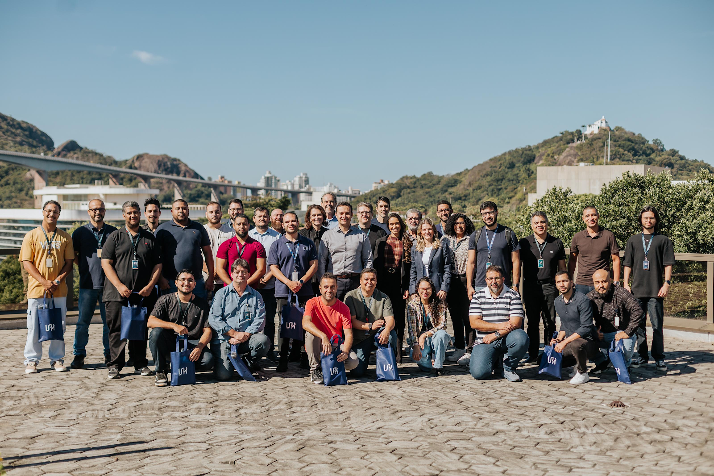
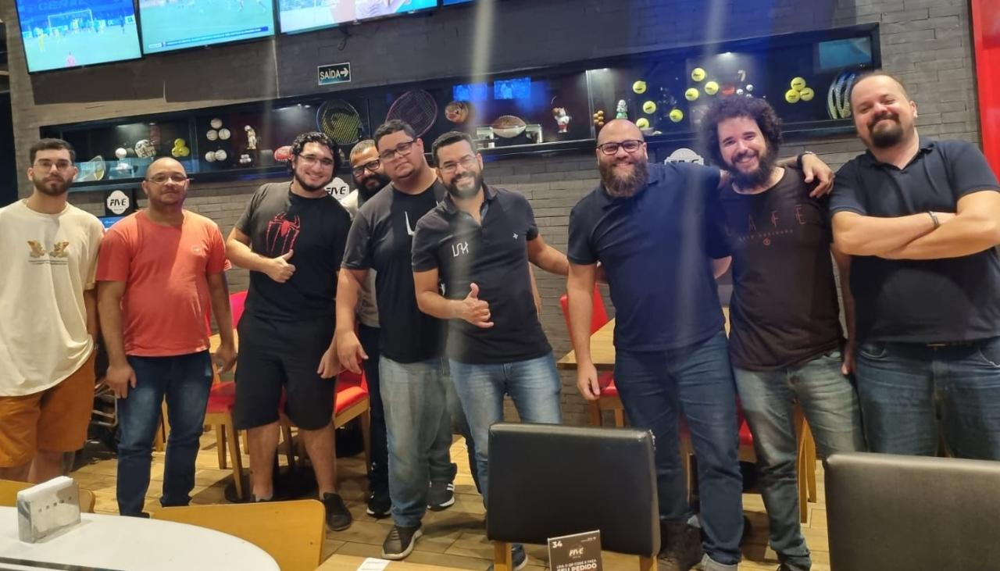
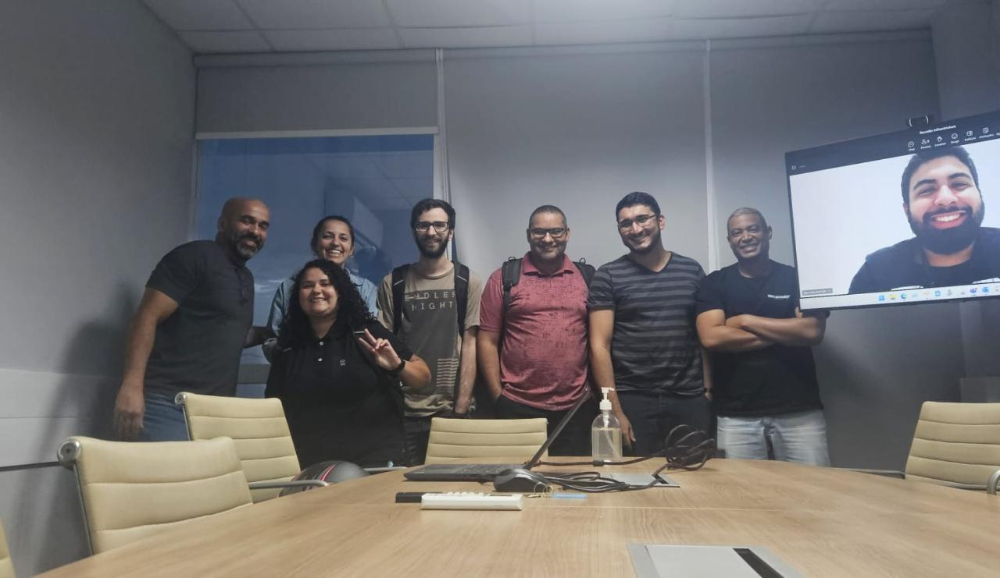
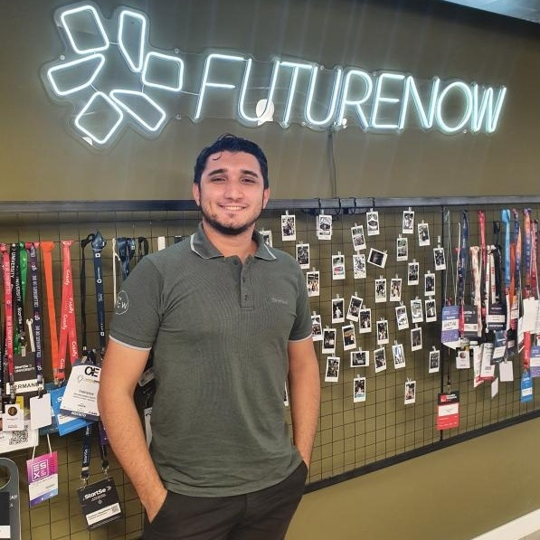
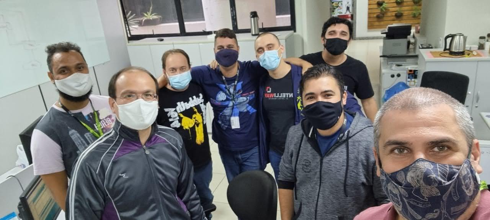
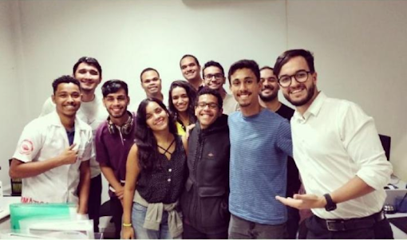
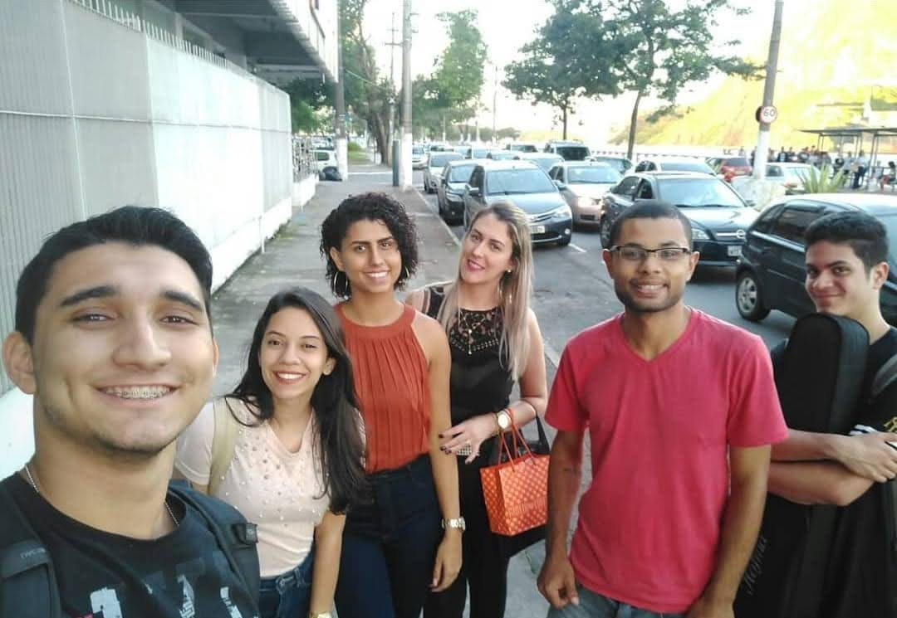

Analista de Seguridad de la Información con más de cinco años de experiencia en redes, infraestructura y ciberseguridad en entornos corporativos críticos y MSSP. Estudiante de Ingeniería Informática en FAESA, con sólida experiencia en operaciones SOC, respuesta a incidentes y mitigación de amenazas en salas de crisis. Especializado en soluciones de distintos fabricantes (Fortinet, Palo Alto, Check Point, Cisco y Forcepoint), WAF, EDR y SIEM, combinando resolución avanzada de problemas de red y análisis de registros para garantizar la resiliencia y la continuidad del negocio.
ISH Tecnologia (SEFAZ) |Analista de Ciberseguridad
Junio 2026 – Actualidad

Dedicación al entorno SEFAZ, protegiendo aplicaciones, infraestructura y servicios.
Monitorización de API, servidores y contenedores (Harpia SIEM, Microsoft Sentinel, SentinelOne).
Investigación y respuesta a incidentes de seguridad.
Microsegmentación con Illumio.
Políticas de seguridad de Check Point.
Análisis de vulnerabilidades (Acunetix, Burp Suite, Postman) y prácticas OWASP.
ISH Tecnologia |Analista de Seguridad de Redes
Febrero 2025 – Junio 2026
Administración y gestión de firewalls en un entorno MSSP (Fortinet, Check Point, Cisco y Forcepoint).
Implementación y revisión de reglas de seguridad para mitigar riesgos y proteger aplicaciones.
Participación en salas de crisis para analizar y resolver incidentes críticos de redes y seguridad.
Apoyo al SOC en la investigación de eventos y contención de amenazas.
Análisis del tráfico de red para identificar comportamientos anómalos.
Administración y soporte de soluciones WAF (Citrix, FortiWeb), con análisis y mitigación de solicitudes maliciosas.
Gestión de entornos de switching (Cisco y Aruba).
Atención a clientes centrada en SLA, continuidad y seguridad de los servicios.
ISH Tecnologia |Analista de Redes
Diciembre 2023 – Febrero 2025

Administración y gestión de firewalls en un entorno MSSP (Fortinet, Check Point, Cisco y Forcepoint).
Participación en salas de crisis para analizar y resolver incidentes críticos de redes y seguridad.
Apoyo al SOC en la investigación de eventos y contención de amenazas.
Análisis del tráfico de red para identificar comportamientos anómalos.
Gestión de entornos IAP (Aruba y Ubiquiti).
Atención a clientes centrada en SLA, continuidad y seguridad de los servicios.
Sá Cavalcante |Analista de Infraestructura
Marzo 2023 – Diciembre 2023

Implementación y administración de infraestructura de redes y seguridad en entornos corporativos.
Gestión y soporte de soluciones como FortiGate, pfSense y UniFi.
Análisis y optimización de costes de infraestructura de TI.
Apoyo a decisiones de adquisición e implementación de tecnologías.
Atención a usuarios de niveles N1 y N2, garantizando la disponibilidad de los servicios.
Participación en proyectos de mejora de seguridad y estandarización de entornos.
INTELLIWAY (TIMENOW Engenharia) |Analista de Infraestructura y Soporte
Enero 2022 – Octubre 2022

Implementación y administración de infraestructura de redes y seguridad en entornos corporativos.
Gestión y soporte de soluciones como FortiGate, pfSense y UniFi.
Análisis y optimización de costes de infraestructura de TI.
Apoyo a decisiones de adquisición e implementación de tecnologías.
Atención a usuarios de niveles N1 y N2, garantizando la disponibilidad de los servicios.
Participación en proyectos de mejora de seguridad y estandarización de entornos.
INTELLIWAY (UNIMED Vitoria) |Analista de Seguridad Blue Team (en formación)
Agosto 2021 – Diciembre 2021
Respuesta a incidentes de seguridad, con foco en contención y mitigación de amenazas.
Monitorización y análisis de eventos de seguridad en entornos corporativos.
Apoyo en el uso de herramientas SIEM y EDR.
Identificación de comportamientos anómalos en redes y sistemas.
Apoyo a la continuidad operativa y mejora de la postura de seguridad.
INTELLIWAY |Becario de Infraestructura de Redes
Febrero 2021 – Agosto 2021

Soporte en la administración de entornos Windows Server (2008 a 2019).
Apoyo en la configuración de reglas de firewall Check Point.
Participación en proyectos de implementación de redes inalámbricas (Aruba).
Mantenimiento y soporte de equipos de infraestructura de red.
MICROCAMP |Instructor de Informática y Robótica
Febrero 2020 – Febrero 2021

Impartir clases de informática y robótica a alumnos de distintos niveles.
Desarrollar material didáctico y realizar seguimiento del progreso del alumnado.
Ofrecer soporte técnico en laboratorios y entornos educativos.
Fênix Gráfica Digital |Técnico de Soporte N1
Noviembre 2017 – Noviembre 2019

Atención de soporte técnico N1 a usuarios de distintas zonas de Espírito Santo, Brasil.
Diagnóstico y resolución de problemas de hardware y software.
Instalación y configuración de sistemas y periféricos.
Apoyo al mantenimiento de la infraestructura de TI.